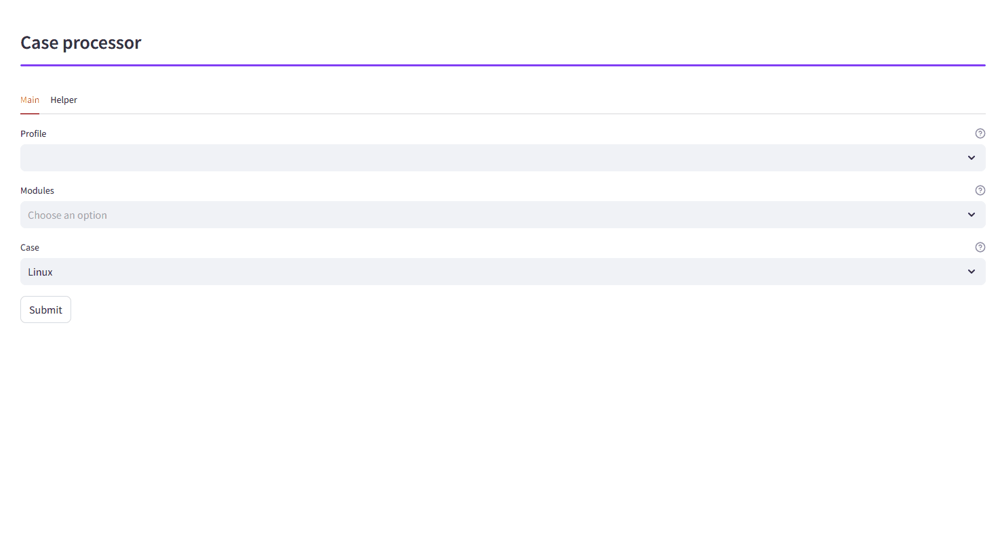
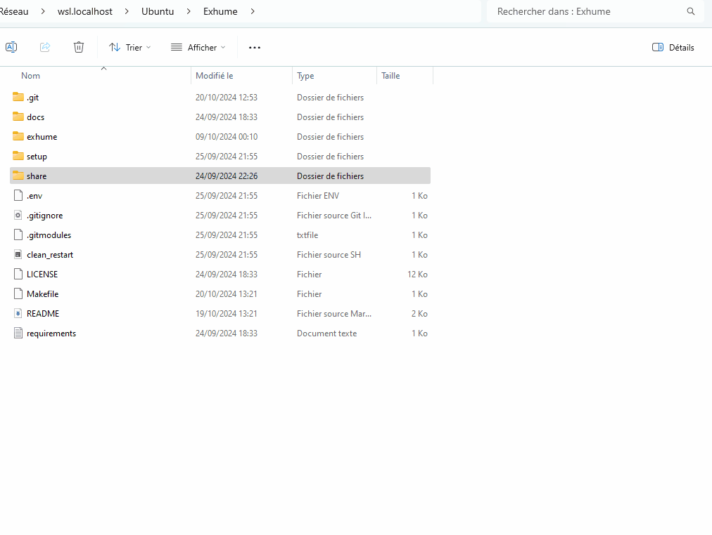

Profiles
Profiles are YAML configuration files that define a set of modules to be executed. Each profile specifies the operating system, modules, and other metadata required for the process.
Tip
Profiles are located in OSIR/OSIR/configs/profiles. They can be placed in any subdirectory of this path, the directory name does not matter.
Example Profile
Below is an example profile DFIR_ORC.yml:
version: 1.0
author:
description:
os: windows
modules:
- extract_orc.yml
- evtx_orc.yml
- test_process_dir
- test_process_dir_multiple_output
- prefetch
- restore_fs
- amcache.yml
- chromium.yml
- firefox.yml
- hives_hklm.yml
- hives_hkcu.yml
- jump_list.yml
- lnk.yml
- recycle_bin.yml
- shell_bags.yml
- shimcache.yml
- srum.yml
- win_timeline.yml
Create a new profile
To create a new profile, follow this structure :
version: 1.0
author: author_name
description: profile_description
os: os_typ
modules:
- module1.yml
- module2.yml
- INPUT ALL THE MODULE YOU WANT
Modules
Modules are individual YAML files that define specific tasks to be executed. Each module includes metadata such as the version, author, description, operating system, type, and requirements.
Note
Modules are essential and are the core of the project. Each processing tool is specified by a module. They are used to specify:
the tool to run and its options
the input file or the directory
the output file or the directory
…
Tip
Modules are located in OSIR/OSIR/configs/modules. They can be placed in any subdirectory of this path, the directory name does not matter.
Example Module
srum.yml
version: 1.0
author:
module: srum
description: Parsing of SRUM artifact.
os: windows
type: process
disk_only: False
no_multithread: False
processor_type:
- external
processor_os: unix
tool:
path: artemis
cmd: acquire --format JSONL --output-dir {output_dir} srum --alt-file {input_file}
source: https://github.com/maxspl/artemis
version: 1.1
input:
type: file
name: SRUDB\.dat
path: Windows/System32/sru
output:
type: multiple_files
format: csv
output_prefix: "{endpoint_name}--{module}-"
endpoint: "restore_fs\\/(.*?)\\/"
Parameters
version: Required
The version of the module.
module: Required
The name of the module. Requires to be the same name as the module file name.
description: Required
Description of the module.
os: Required
The operating system the module is designed for.
Informational, not used to process the input.
Examples of value: Windows, Unix, Network etc.
type: Required
The type of module (e.g., pre-process, process, post-process).
Informational, not used to process the input.
disk_only: Optional
Boolean indicating if the module can only take input via direct access (not via SMB), ie. only if the agent is on the same host as the master.
Default value is False.
Used to determine the queue for the task.
Useful for tasks that require many disk operations like decompressing 7z.
no_multithread: Optional
Boolean indicating if the module must be processed by a queue that does not allow concurent tasks.
Default value is False.
Each tasks with this option will be processed sequentially on each agent.
processor_os: Required
Operating system for the processor.
processor_type: Required
- Two processor types exist:
external: if processor_os is unix, a subprocess run the tool specified inside the agent docker. If the processor_os is Windows the tool specified is run on the Windows box via WinRM
internal: a internal processor is a python module (exposing defined functions, described in the documentation) under OSIR/OSIR/src/modules/. The name of the python module must the name of the module specified in the config file of the module
Example: OSIR/OSIR/configs/modules/pre-process/extract_orc.yml is using the module OSIR/OSIR/src/modules/windows/extract_orc.py
List of values.
Possible values: internal, external (can contain both if the internal module uses an external tool defined in the config file)
tool: Required only if processor_type contains external
- path: Required
Path to the tool.
- If processor_os is unix, there are 3 choices:
relative path from OSIR/OSIR/bin/ on agent docker
full path of the tool on agent docker
path of the tool presents in the PATH env var of agent docker
- If processor_os is windows, only one choice for the moment:
full path from <mount_point>OSIRbin where <mount_point> is defined in agent config, default is C:
- cmd: Required
Command line of the tool. Can contain specific variables replaced by the agent at runtime (cf. Exposed variables in the documentation)
- source: Optional
URL to the source of the tool.
- version: Optional
Version of the tool.
input: Required
- type: Required
Possible values: file, dir
- name: Required
Regex pattern to identify the input file.
Can only be used input type is file.
If input type is file, path option can also be used.
- path: Required
Path suffix of the input file or directory.
File or dir to match must end the path specified.
It’s also possible to use a regex that will be applied on the whole file/dir path. To enable regex mode, enclose your pattern in r”” For an example, see windows/browsers module.
Ex: Windows/System32/sru will match /OSIR/share/cases/my_first_case/restore_fs/DESKTOP-ABC/C/Windows/System32/sru
Tip
How to use module output as input of a new module ? Just specify input.name or/and input.path corresponding to the output of the first module. The tool automatically processes each new file to match a module.
output: Required
- type: Required
Type of output
Possible values: single_file, multiple_files, None
- format: Optional
Format of the output (e.g., csv, jsonl).
Informational, not used to process the output.
- output_prefix: Optional
Can only be used if output type is multiple_files.
Use to add a prefix to each file and directory that are the output.
Usefull when tools don’t allow to specify output name.
- output_file: Optional
Name of the output file. Can contain specific variables replaced by the agent at runtime (cf. Exposed variables in the documentation)
- output_dir: Optional
Name of the output directory. Can contain specific variables replaced by the agent at runtime (cf. Exposed variables in the documentation)
Default is the name of the module in the case. Ex: /OSIR/share/cases/my_first_case/<module_name>
As a default value exists, no need to define it to use it in command line if default value is desired.
endpoint: Optional
Regex pattern to capture the name of the input in the path of the input dir or the input directory.
Used in exposed variables to name the output. Useful when processing files from multiple endpoints without overwriting the output files.
optional: Optional
List of <key: value> that will be used as exposed variables and can be referenced in the command line.
Ex: if optional contain password: ABCD and the command line contains {optional_password}, it will be replaced with ABCD.
Create a new module
- To create a new module from scratch you can:
Manual: Create a .yml file using an existing one as example and add the binary required if exernal type or create python module if internal type.
Automatic: Run the Python helper to follow a guided module creation like discribed below.
Warning
Automatic process only support basic modules options.
sudo make module
- Then, the helper will propose two types of processes:
short: It will only generates the sample files and gives their path, you have to modify them.
long: It will ask you all (in fact, some options are available through the helper) required fields and generated the module ready to work.
Below is an example of how to create a module for parsing ‘/var/log/debug’. It will working internal Python module but doing only basic action, the parsing logic must be added by yourself:

After the creation you can execute the module on a extracted collect :
And the result of the created module can be see in the cases_path/debug/
Exposed variables
Exposed variables are replaced by the OSIR agent during execution. To be used in the config files, they need to be contained in {}.
Variable |
Description |
Where It Can Be Used |
|---|---|---|
|
Path of the input file that matched input options in module config file. |
|
|
Path of the input directory that matched input options in module config file. |
|
|
Name of the output file, defined in output options in module config file. |
|
|
Path of the output directory, default is the name of the module in the case. |
|
|
Name of the module. |
|
|
Value extracted from pattern regex specified in endpoint option. |
|
|
Name of the case being processed. |
|
|
Path of the case being processed. |
|
|
Optional values, usage described in module documentation. |
|